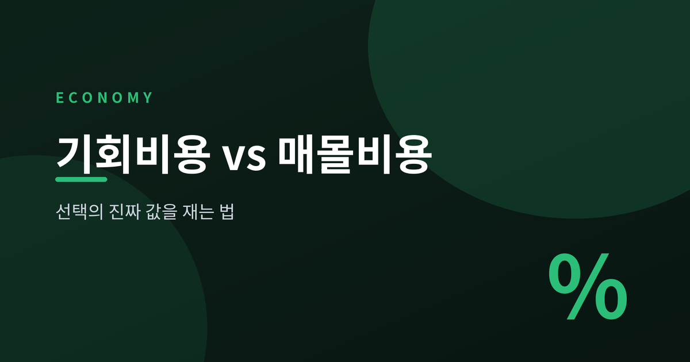
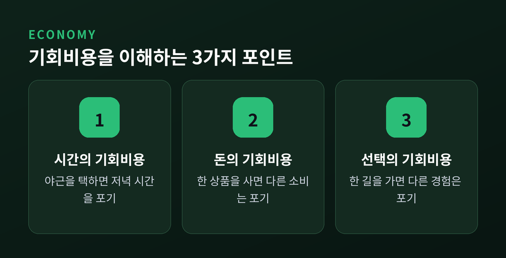
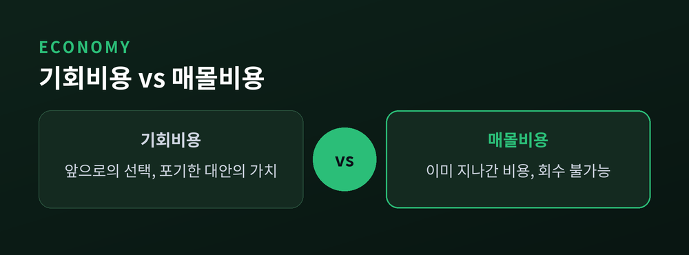
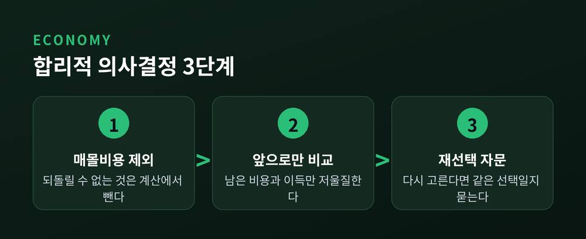

[경제] 기회비용과 매몰비용 — 선택의 진짜 값을 재는 법

오늘은 기회비용과 매몰비용, 이 두 경제 개념을 정리해 보려 합니다. 둘 다 어디선가 들어본 말인데요. 막상 내 선택 앞에서는 두 개념이 자주 뒤섞입니다.
- 기회비용은 하나를 고르며 포기한 다른 대안의 가치입니다.
- 매몰비용은 이미 써버려서 되찾을 수 없는 비용입니다.
- 합리적인 선택은 매몰비용을 잊고, 앞으로의 기회비용만 비교하는 데서 시작합니다.
아래에서 두 개념을 일상 예시로 풀어보고, 실제 결정에 어떻게 연결하면 좋을지 함께 살펴보겠습니다.
기회비용, 포기한 대안의 가치
기회비용은 어떤 선택을 할 때 함께 포기하게 되는, 다른 대안 중 가장 아까운 것의 가치입니다.
주말 오후를 예로 들어보겠습니다. 친구와 약속을 잡으면 그 시간에 할 수 있었던 밀린 공부나 낮잠은 자연스럽게 사라집니다. 이때 놓친 공부나 휴식의 가치가 바로 이 약속의 기회비용입니다.
돈으로 셈해도 마찬가지입니다. 내 돈 1,000만원으로 작은 가게를 차렸다고 해보겠습니다. 가게에서 번 돈만 이익이라고 생각하기 쉽습니다. 하지만 그 1,000만원을 은행에 두었다면 받았을 이자도 함께 계산해야 진짜 이익이 보입니다. 그 이자가 바로 이 창업의 기회비용입니다.
기회비용에는 눈에 보이는 지출뿐 아니라 시간과 노력도 들어갑니다. 다음 세 가지가 대표적입니다.
- 시간의 기회비용: 야근을 택하면 가족과의 저녁 시간을 포기하게 됩니다.
- 돈의 기회비용: 한 상품에 돈을 쓰면 다른 상품을 살 기회가 사라집니다.
- 선택의 기회비용: 한 회사에 입사하면 다른 회사에 다녔을 경험은 얻을 수 없습니다.

이렇게 보면 기회비용은 우리가 이미 늘 계산하고 있던 셈법입니다. 다만 의식하지 못했을 뿐입니다. 눈에 보이는 값만 비교하면 손해를 보고 있다는 사실조차 모를 수 있습니다. 반대로 포기한 대안까지 함께 따져보면, 선택의 진짜 무게가 드러납니다.
매몰비용, 이미 써버려 돌아오지 않는 비용
매몰비용은 이미 지출해서, 어떤 선택을 하든 되돌려 받을 수 없는 비용입니다.
뷔페 식당이 좋은 예입니다. 이미 낸 식대는 배가 부르든 아니든 돌려받지 못합니다. 그런데도 본전 생각에 억지로 몇 접시를 더 먹는 경우가 있습니다. 이미 낸 돈은 앞으로 무엇을 먹을지와는 아무 상관이 없는데도 그렇습니다.
영화표도 마찬가지입니다. 표를 사고 들어갔는데 영화가 재미없다면, 남은 시간을 어떻게 쓸지는 새로운 선택입니다. 이미 낸 표값은 계속 앉아 있어도 나가도 돌아오지 않습니다.
예전엔 저도 "이미 낸 돈이 아까우니 끝까지 가야 한다"는 생각이 당연하다고 여겼습니다. 지금은 그 생각이 오히려 시간과 감정을 더 낭비하게 만든다는 쪽에 가깝다고 생각합니다.
기회비용과 매몰비용을 나란히 놓아보면 차이가 또렷해집니다.
| 구분 | 기회비용 | 매몰비용 |
|---|---|---|
| 시점 | 앞으로의 선택 | 이미 지나간 선택 |
| 회수 여부 | 선택에 따라 달라짐 | 회수 불가능 |
| 의사결정에서 | 반드시 고려해야 함 | 고려하지 않는 것이 합리적 |

두 개념은 방향이 반대입니다. 기회비용은 앞을 보고, 매몰비용은 뒤에 남아 있습니다. 그런데 사람의 마음은 자주 뒤를 향합니다. 이미 쓴 돈, 이미 들인 시간에 마음이 붙잡히기 쉽습니다.
매몰비용 오류를 피하는 합리적 의사결정
이미 쓴 비용 때문에 손해가 뻔한 선택을 계속 밀어붙이는 것을 매몰비용 오류라고 부릅니다. 흔히 "본전 생각"이라는 말로도 표현됩니다.
재미없는 학원을 계속 다니는 경우, 성과가 안 나는 프로젝트에 인력을 계속 투입하는 경우가 대표적입니다. "여기까지 왔는데 그만두면 아깝다"는 마음이 판단을 흐립니다. 손실을 인정하기 싫은 마음, 지금까지의 선택을 스스로 정당화하고 싶은 마음이 함께 작동하기 때문입니다.
합리적으로 판단하려면 다음 순서로 생각해 보시면 좋겠습니다.
1. 이미 쓴 비용은 계산에서 뺀다 — 되돌릴 수 없는 돈과 시간은 지금의 선택과 무관합니다.
2. 지금부터 들어갈 비용과 얻을 이득만 비교한다 — 앞으로 남은 선택지만 저울에 올립니다.
3. "처음부터 다시 고른다면 같은 선택을 할까"를 스스로에게 묻는다 — 답이 "아니오"라면 그만두는 쪽이 합리적인 셈입니다.
이 방식은 낭비를 줄이고 다음 선택에 집중하게 해준다는 점에서 분명 쓸모가 있습니다. 다만 한계도 있습니다. 사람 사이의 관계나 오래 쌓은 신뢰처럼, 숫자 하나로 손익을 따지기 어려운 영역도 있습니다. 모든 관계나 노력을 매몰비용으로만 취급하면 오히려 소중한 것을 놓칠 수 있습니다. 그래서 이 원칙은 돈과 시간이 걸린 판단에 참고하는 도구로 받아들이시면 좋겠습니다.

여기까지 기회비용과 매몰비용을 살펴봤습니다. 기회비용은 앞으로 포기할 대안의 가치이고, 매몰비용은 이미 지나가버려 되돌릴 수 없는 비용입니다. 선택의 순간에는 지나간 비용을 내려놓고, 앞으로의 득실만 다시 재보시면 좋겠습니다.
이미 쓴 것은 잊고, 앞으로 얻을 것만 보는 것 — 그것이 선택의 진짜 값을 재는 법입니다.
작은 결정 하나에도 이 두 잣대를 슬쩍 대어보시면, 다음 선택이 조금은 더 가벼워질 것입니다.
이 글은 경제 개념을 쉽게 설명하기 위한 것이며, 특정 투자나 상품을 권유하지 않습니다.